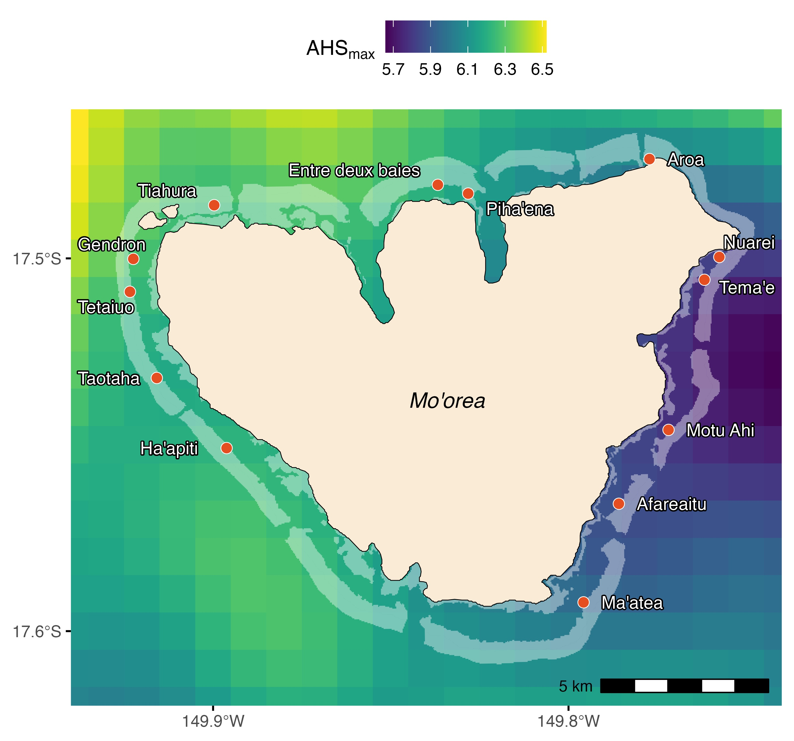
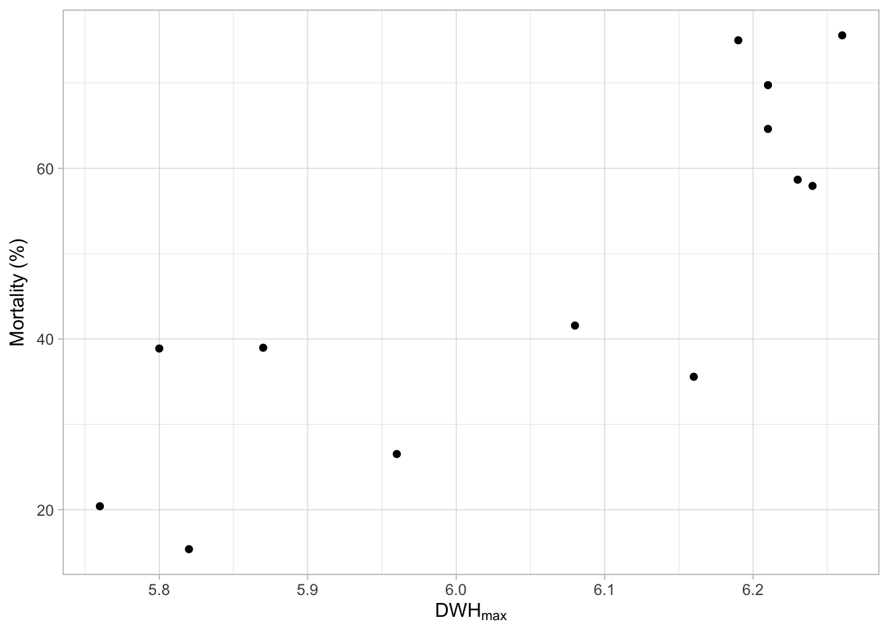
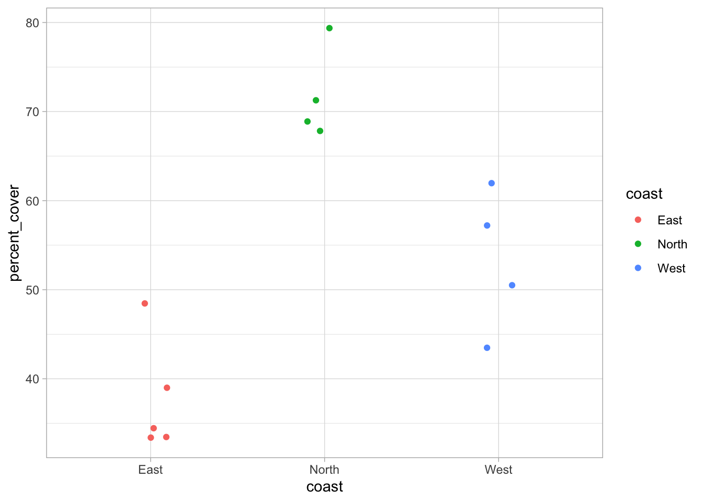
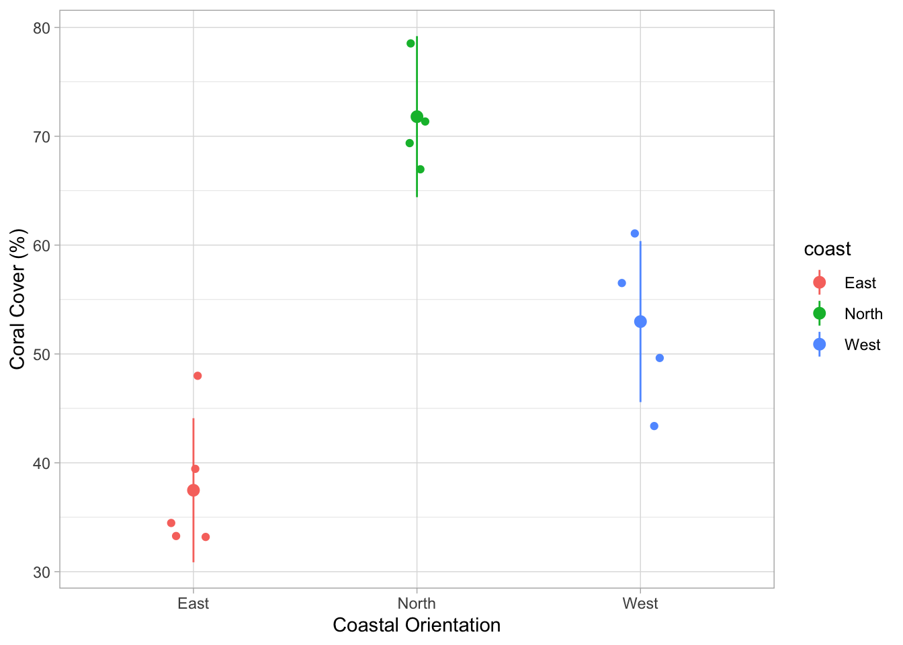
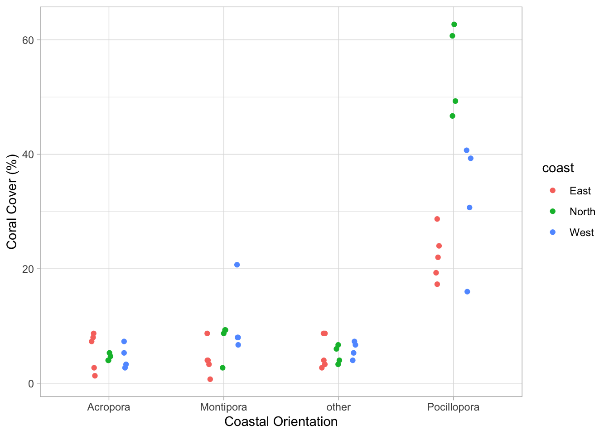
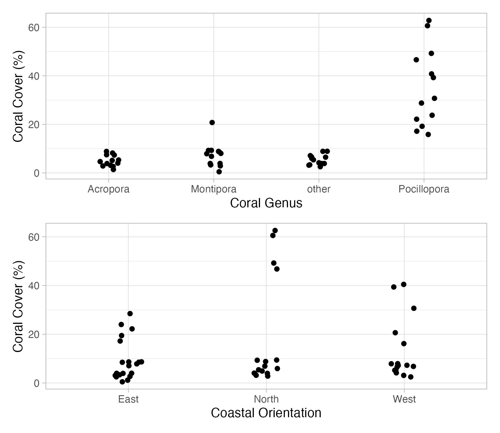
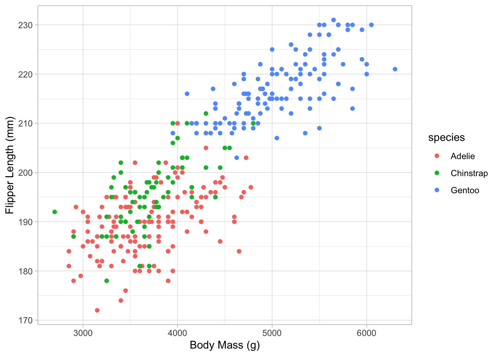
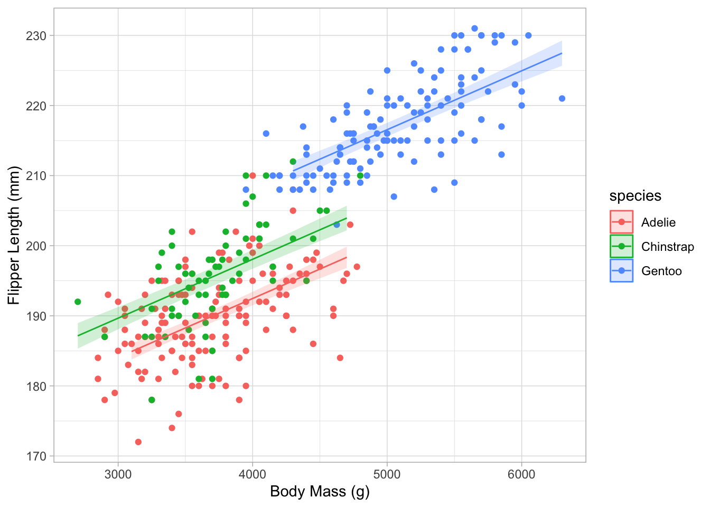
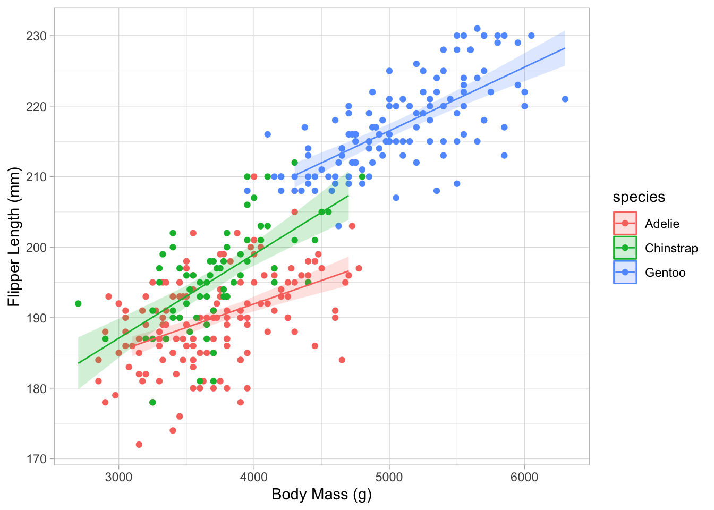

library(tidyverse)
library(here)
library(modelbased)
dat_change_coral <- read.csv(here("TP/TP_03/data/coral_mortality.csv"))Solution pour TP 03
Régression
Maintenant, nous allons analyser des données réelles. Comme dans la présentation, nous commençons par une régression. Cette analyse fait partie de mon doctorat, où j’ai étudié l’impact de l’événement de blanchiment de 2019 sur la mortalité des coraux à Moorea. C’était l’événement de blanchiment le plus intense à Moorea au cours des dernières décennies et a causé une mortalité généralisée. Comme vous pouvez le voir sur la figure, le stress thermique cumulé maximum (\(\mathrm{ahs_{max}}\)) variait autour de l’île. J’ai combiné ces données satellitaires avec des données de couverture corallienne provenant de transects benthiques pour tester si l’intensité du stress thermique affectait la mortalité du blanchiment.

La première étape de toute analyse est « l’exploration des données », elle est effectuée pour mieux comprendre les données et voir les tendances générales.
Tâche 1
Le cadre de données dat_change_coral contient la mortalité des coraux due à l’événement de blanchiment à chaque site sur la carte ci-dessus, avec le stress thermique cumulé maximum correspondant. Tracez la colonne max_ahs (c’est-à-dire l’intensité maximale du stress thermique cumulé) sur l’axe des x, et perc_mort (c’est-à-dire la mortalité des coraux en pourcentage) sur l’axe des y, et dessinez un nuage de points. Souvenez-vous du TP 02, vous devriez être en mesure de compléter cette tâche.
ggplot(data = dat_change_coral, aes(x = max_ahs, y = perc_mort)) +
geom_point() +
labs(
x = expression(DWH[max]),
y = expression(Mortality ~ "(%)")
) +
theme_light()
Avant de continuer, réfléchissez à ce que vous voyez ici. Penseriez-vous que c’est une relation intéressante à explorer ?
NoteSolution
Il semble y avoir une corrélation positive entre l’intensité du stress thermique et la mortalité.
Il semble y avoir une relation positive entre la mortalité des coraux et l’intensité du stress thermique. Nous allons maintenant construire un modèle linéaire (dans ce cas, une régression) pour tester si cette relation est statistiquement significative. La formule mathématique du modèle est :
\[ \begin{align} \mathrm{Mortality}_i \sim \mathrm{Normal(\mu}_i,~\mathrm{\sigma)} \\ \mu_i = a + b \cdot \mathrm{heatstress}_i \end{align} \]
, où \(\mathrm{Mortality}_i\) est la mortalité des coraux au site \(i\) (perc_mort), et \(\mathrm{heatstress}_i\) le stress thermique cumulé maximum à ce site (max_ahs).
Tâche 2
Traduisez ce modèle dans la fonction lm() de R et comme toujours, remplacez les ____. Gardez à l’esprit que vous voulez étudier comment la mortalité des coraux (perc_mort) est affectée par le stress thermique cumulé maximum (max_ahs).
m_cor_mort <- lm(perc_mort ~ max_ahs, data = dat_change_coral)Tâche 3
Une fois que vous avez créé le modèle, vous pouvez vérifier les coefficients (ordonnée à l’origine et pente), la valeur p, et la valeur \(R^2\) avec la commande summary() :
summary(m_cor_mort)
Call:
lm(formula = perc_mort ~ max_ahs, data = dat_change_coral)
Residuals:
Min 1Q Median 3Q Max
-21.0078 -7.7686 0.0181 8.6377 15.6975
Coefficients:
Estimate Std. Error t value Pr(>|t|)
(Intercept) -500.83 108.60 -4.612 0.000751 ***
max_ahs 90.49 17.91 5.052 0.000371 ***
---
Signif. codes: 0 '***' 0.001 '**' 0.01 '*' 0.05 '.' 0.1 ' ' 1
Residual standard error: 11.81 on 11 degrees of freedom
Multiple R-squared: 0.6988, Adjusted R-squared: 0.6715
F-statistic: 25.53 on 1 and 11 DF, p-value: 0.0003707Qu’est-ce que cela vous dit ?
Pensez à l’équation linéaire pour l’association entre le stress thermique et la mortalité des coraux. Quel est l’augmentation attendue (ou la diminution ?) de la mortalité pour chaque augmentation d’une unité de max_ahs ? Quelle est la valeur de \(R^2\) ? La relation entre le stress thermique et la mortalité est-elle statistiquement significative ou non ?
NoteSolution
L’intensité du stress thermique, mesurée comme le stress thermique cumulé maximum en 2019 (AHSmax), a significativement impacté la mortalité des coraux (t(11) = 5.052, p < .001, adj. R2 = 0.67). La mortalité attendue a augmenté de 90.5% ± 18.0% (SE) par unité de \(\mathrm{ahs_{max}}\).
Dans les publications, nous voulons souvent tracer ces résultats sous la forme d’une ligne avec une bande d’incertitude (vous verrez ce que je veux dire dans un instant). Vous pouvez faire cela comme suit. Tout d’abord, nous devons prédire les données basées sur le modèle. La fonction estimate_relation() du package modelbased que vous avez chargé plus haut fait exactement cela. En utilisant les informations du modèle, elle simule (ou prédit) la mortalité attendue des coraux pour différentes valeurs de stress thermique :
pred_cor_mort <- estimate_relation(m_cor_mort)Regardez le cadre de données pred_cor_mort dans l’onglet d’environnement en haut à droite. Vous verrez que pour chaque \(\mathrm{ahs_{max}}\) présent dans les données, la valeur correspondante de mortalité des coraux est donnée. Gardez à l’esprit que ce sont vraiment les résultats du modèle, pas les données brutes. La fonction estimate_relation() peut aussi prédire la mortalité théorique pour des valeurs de \(\mathrm{ahs_{max}}\) non présentes dans les données ! Vous trouverez également une colonne SE, contenant l’erreur standard des prédictions, et des colonnes pour l’intervalle de confiance inférieur et supérieur (CI_low et CI_high). La plage de l’IC représente l’incertitude pour la ligne de régression. Dans les publications scientifiques, cela est souvent représenté par une bande/zone grise autour de la ligne.
Pour produire un tracé qui contient les données brutes, la ligne de régression, et l’incertitude de cette ligne, nous pouvons utiliser différentes couches ggplot (vous avez appris cela la semaine dernière). Une nouvelle information est que chaque couche peut provenir d’un autre ensemble de données. Vous définissez ces données avec data = pour chaque couche. Si vous ne définissez pas data = pour une couche, les données utilisées dans la fonction ggplot() principale (première ligne) seront utilisées pour toutes les couches.
ggplot(data = dat_change_coral, aes(x = max_ahs, y = perc_mort)) +
geom_point() +
labs(
x = expression(DWH[max]),
y = expression(Mortality ~ "(%)")
) +
geom_ribbon(
data = pred_cor_mort,
aes(ymin = CI_low, ymax = CI_high, x = max_ahs, y = NULL),
alpha = 0.2,
color = NA
) +
geom_line(data = pred_cor_mort, aes(x = max_ahs, y = Predicted)) +
theme_light()
Tâche 4
Regardez chaque ligne de code que j’ai utilisée pour ce tracé.
- Comprenez-vous comment cela fonctionne ? Qu’est-ce que vous pensez qui est tracé en premier, les points (données brutes), la ligne de régression, ou la zone grise ?
- Avez-vous une idée de pourquoi la zone grise a cette forme de « nœud papillon » ?
Consultez la page d’aide pour les réponses.
Conseils :
- Gardez à l’esprit que ce ne sont pas ici les valeurs attendues (\(\mathrm{Mortalité}_i \sim \mathrm{Normale(\mu}_i,~\mathrm{\sigma)}\)) incluant \(\mathrm{\sigma}\) qui sont affichées, mais la certitude du modèle à estimer la partie \(\mathrm{\mu}_i\)
- Dans la couche
geom_ribbon()(qui dessine la zone grise), j’ai utiliséy = NULL. C’est parce que chaque couche récupère toutes les informations de la fonctionggplot()principale (comme je l’ai expliqué ci-dessus pourdata =). Puisque dans la fonction principaley = perc_mort, une colonne qui existe seulement dansdat_change_coralmais pas danspred_cor_mort, j’ai dû dire à la couchegeom_ribbon()que cette colonne n’existe pas pour cette couche et ne peut pas être dessinée sur l’axe des y. Cela se fait avecy = NULL.
ANOVA
Ci-dessus, nous avons effectué une analyse de régression. Mais dans la présentation, je vous ai montré que l’ANOVA, c’est-à-dire tester les différences parmi les moyennes des groupes, est similaire à une régression qui estime seulement les ordonnées à l’origine pour chaque groupe, mais pas la pente.
Ici, nous pourrions tester s’il y a des différences dans la couverture des coraux entre les différents sites avant l’événement de blanchiment.
Ces données contiennent la couverture moyenne des coraux en pourcentage avant l’événement de blanchiment de 2019 à chaque site de Moorea.
dat_coral_cover <- read.csv(here("TP/TP_03/data/coral_cover.csv"))Comme avant, la première étape de toute analyse est de faire une analyse exploratoire, c’est-à-dire de tracer les données brutes. Ici, tracez la couverture des coraux à chaque site en utilisant position_jitter(). J’ai regroupé les données par orientation côtière (regardez la carte ci-dessus).
ggplot(data = dat_coral_cover, aes(x = coast, y = percent_cover, col = coast)) +
geom_point(position = position_jitter(width = .1)) +
theme_light()
Tâche 5
Il semble que la couverture des coraux dépend de l’orientation côtière ! Faisons une ANOVA pour tester cela. Nous voulons tester l’impact de coast sur percent_cover :
m_cor_cover <- lm(percent_cover ~ coast, data = dat_coral_cover)Nous pouvons maintenant utiliser les fonctions summary() et anova() pour afficher les valeurs \(R^2\) et la valeur p pour l’impact de coast sur percent_cover :
summary(m_cor_cover)
Call:
lm(formula = percent_cover ~ coast, data = dat_coral_cover)
Residuals:
Min 1Q Median 3Q Max
-9.675 -4.500 -2.500 4.325 10.520
Coefficients:
Estimate Std. Error t value Pr(>|t|)
(Intercept) 37.480 2.969 12.622 1.81e-07 ***
coastNorth 34.320 4.454 7.705 1.63e-05 ***
coastWest 15.495 4.454 3.479 0.00593 **
---
Signif. codes: 0 '***' 0.001 '**' 0.01 '*' 0.05 '.' 0.1 ' ' 1
Residual standard error: 6.64 on 10 degrees of freedom
Multiple R-squared: 0.8559, Adjusted R-squared: 0.827
F-statistic: 29.69 on 2 and 10 DF, p-value: 6.223e-05anova(m_cor_cover)Analysis of Variance Table
Response: percent_cover
Df Sum Sq Mean Sq F value Pr(>F)
coast 2 2617.63 1308.82 29.687 6.223e-05 ***
Residuals 10 440.88 44.09
---
Signif. codes: 0 '***' 0.001 '**' 0.01 '*' 0.05 '.' 0.1 ' ' 1Avec une valeur p inférieure à 0,05, nous savons qu’il y a un impact statistiquement significatif de l’orientation côtière sur la couverture des coraux. Mais nous ne savons pas quel groupe (orientation côtière) diffère de quel autre groupe. Pour ce faire, nous devons effectuer des tests post hoc. J’expliquerai davantage à ce sujet la semaine prochaine. Mais une visualisation du modèle donne déjà des indices.
En utilisant une approche similaire à celle de la régression ci-dessus, nous pouvons prédire et utiliser la fonction estimate_relation() pour calculer les moyennes des groupes basées sur le modèle et les intervalles de confiance :
pred_cor_cover <- estimate_relation(m_cor_cover)ggplot(data = dat_coral_cover, aes(x = coast, y = percent_cover, col = coast)) +
geom_point(position = position_jitter(width = .1)) +
geom_pointrange(
data = pred_cor_cover,
aes(x = coast, y = Predicted, ymin = CI_low, ymax = CI_high)
) +
labs(
x = "Coastal Orientation",
y = "Coral Cover (%)"
) +
theme_light()
Tâche 6
Avez-vous une idée de ce qui pourrait expliquer ces différences biologiquement ? Considérez que les récifs de Moorea ont été complètement détruits en 2010 en raison d’une épidémie d’étoiles de mer couronne d’épines, un prédateur de coraux, suivie d’un cyclone en 2010. La récupération ensuite jusqu’en 2019 était très rapide comparée à d’autres récifs. Nous savons également que le cyclone a frappé le Nord et l’Ouest plus fort que l’Est de Moorea. Pourquoi cela aurait pu être un avantage pour la récupération à ces sites ?
NoteSolution
Il se pourrait que la récupération ait été plus rapide au Nord et à l’Ouest qu’à l’Est parce que le cyclone a nettoyé le substrat et a créé de l’espace pour les nouveaux recrutement. Au récif externe de Moorea, nous avons actuellement le problème qu’il y a beaucoup de squelettes coralliens morts restants après l’événement de blanchiment de 2019 qui se brisent dans la houle. C’est un substrat très instable pour les nouvelles recrues de coraux et peut entraver la récupération. Aucun cyclone ne s’est produit après l’événement de blanchiment de 2019. Donc avant, la récupération plus rapide au Nord et à l’Ouest de Moorea aurait pu conduire à la couverture de coraux plus élevée observée à ces sites.
Mais bien sûr, d’autres facteurs ont aussi pu impacter le recrutement et la couverture des coraux, comme par exemple la sédimentation, l’apport de nutriments, la biomasse de poissons herbivores (les coraux sont en compétition avec les algues pour l’espace, les algues restent plus communes quand il y a moins de poissons herbivores).
Effets additifs et interactifs
Mais souvent dans les systèmes biologiques, il y a plusieurs variables qui peuvent être importantes. Dans le dernier modèle, par exemple, nous avons examiné la couverture globale des coraux à différents sites. Mais le genre du corail peut aussi jouer un rôle important !
Charger les données contenant des informations sur le genres aussi
dat_coral_cover_genus <- read.csv(here("TP/TP_03/data/coral_cover_genus.csv"))Comme toujours, tracez d’abord les données :
ggplot(
data = dat_coral_cover_genus,
aes(x = genus, y = percent_cover, col = coast)
) +
geom_point(
position = position_jitterdodge(jitter.width = .1, dodge.width = .4)
) +
labs(
x = "Coastal Orientation",
y = "Coral Cover (%)"
) +
theme_light()
En regardant simplement les données, nous constatons que l’impact principal sur les différences de couverture des coraux était dû aux coraux Pocillopora, le genre dominant à Moorea. Il semble y avoir seulement de mineures différences pour les autres genres.
En R, nous pouvons facilement regarder l’impact combiné de coast (comme avant, modèle m_cor_cover) et genus, une nouvelle variable explicative. Ajoutez-la simplement !
m_cor_cover_add <- lm(
percent_cover ~ coast + genus,
data = dat_coral_cover_genus
)
summary(m_cor_cover_add)
Call:
lm(formula = percent_cover ~ coast + genus, data = dat_coral_cover_genus)
Residuals:
Min 1Q Median 3Q Max
-19.2269 -4.2510 0.0338 2.8177 22.7606
Coefficients:
Estimate Std. Error t value Pr(>|t|)
(Intercept) 1.1315 2.5792 0.439 0.6629
coastNorth 8.5925 2.6361 3.260 0.0021 **
coastWest 3.8800 2.6361 1.472 0.1479
genusMontipora 2.2692 3.0827 0.736 0.4654
genusother 0.4692 3.0827 0.152 0.8797
genusPocillopora 30.2154 3.0827 9.802 7.67e-13 ***
---
Signif. codes: 0 '***' 0.001 '**' 0.01 '*' 0.05 '.' 0.1 ' ' 1
Residual standard error: 7.859 on 46 degrees of freedom
Multiple R-squared: 0.7614, Adjusted R-squared: 0.7354
F-statistic: 29.35 on 5 and 46 DF, p-value: 2.967e-13anova(m_cor_cover_add)Analysis of Variance Table
Response: percent_cover
Df Sum Sq Mean Sq F value Pr(>F)
coast 2 656.3 328.16 5.3126 0.008399 **
genus 3 8409.1 2803.02 45.3785 8.599e-14 ***
Residuals 46 2841.4 61.77
---
Signif. codes: 0 '***' 0.001 '**' 0.01 '*' 0.05 '.' 0.1 ' ' 1Un tel modèle s’appelle un modèle additif. Il examine séparément et indépendamment l’impact de coast et de genus. Les deux sont statistiquement significatifs. Cela ressemble au tracé suivant :

Mais nous nous intéressons aux deux impacts en même temps ! En d’autres termes, comment la couverture des coraux diffère-t-elle entre l’orientation côtière en fonction du genre de corail ?
Pour cela, nous avons besoin d’interactions ! Dans les modèles R, cela se fait en remplaçant le + par un * :
m_cor_cover_int <- lm(
percent_cover ~ coast * genus,
data = dat_coral_cover_genus
)
summary(m_cor_cover_int)
Call:
lm(formula = percent_cover ~ coast * genus, data = dat_coral_cover_genus)
Residuals:
Min 1Q Median 3Q Max
-15.68 -2.33 -0.20 1.80 9.85
Coefficients:
Estimate Std. Error t value Pr(>|t|)
(Intercept) 5.600 2.192 2.554 0.0145 *
coastNorth -1.100 3.288 -0.335 0.7397
coastWest -0.950 3.288 -0.289 0.7742
genusMontipora -1.460 3.100 -0.471 0.6403
genusother -0.120 3.100 -0.039 0.9693
genusPocillopora 16.660 3.100 5.374 3.58e-06 ***
coastNorth:genusMontipora 4.460 4.651 0.959 0.3433
coastWest:genusMontipora 7.660 4.651 1.647 0.1074
coastNorth:genusother 0.620 4.651 0.133 0.8946
coastWest:genusother 1.295 4.651 0.278 0.7821
coastNorth:genusPocillopora 33.690 4.651 7.244 8.59e-09 ***
coastWest:genusPocillopora 10.365 4.651 2.229 0.0315 *
---
Signif. codes: 0 '***' 0.001 '**' 0.01 '*' 0.05 '.' 0.1 ' ' 1
Residual standard error: 4.902 on 40 degrees of freedom
Multiple R-squared: 0.9193, Adjusted R-squared: 0.8971
F-statistic: 41.41 on 11 and 40 DF, p-value: < 2.2e-16anova(m_cor_cover_int)Analysis of Variance Table
Response: percent_cover
Df Sum Sq Mean Sq F value Pr(>F)
coast 2 656.3 328.16 13.656 3.015e-05 ***
genus 3 8409.1 2803.02 116.644 < 2.2e-16 ***
coast:genus 6 1880.2 313.37 13.040 4.091e-08 ***
Residuals 40 961.2 24.03
---
Signif. codes: 0 '***' 0.001 '**' 0.01 '*' 0.05 '.' 0.1 ' ' 1Quand l’interaction est significative, nous savons que le genre affecte la façon dont l’orientation côtière affecte la couverture des coraux. Cela pourrait être soit parce que seulement pour certains genres il y a un impact significatif de coast, soit parce que la direction de l’impact de coast diffère entre les différents genres. Souvent, tracer les données aide à avoir une idée. Et la semaine prochaine, nous apprendrons à faire des tests réels sur cela, donc des tests par paires entre tous les différents groupes.
ANCOVA
Quelque chose de similaire peut également être fait dans la régression. Vous pourriez être intéressé non seulement par l’impact d’une variable numérique explicative, mais aussi si cet impact diffère entre différents groupes. Ces modèles s’appellent ANCOVA.
Nous utilisons l’ensemble de données des pingouins que vous connaissez déjà bien pour cela. Similaire à la couverture des coraux pour différents genres décrite ci-dessus, vous allez maintenant examiner l’impact de l’espèce de pingouin sur la relation entre la longueur de la nageoire et la masse corporelle.
Charger le package qui contient les données :
library(palmerpenguins)
Attaching package: 'palmerpenguins'The following objects are masked from 'package:datasets':
penguins, penguins_rawTâche 7
Comme toujours, d’abord visualiser les données. Produisez un nuage de points avec body_mass_g sur l’axe des x, flipper_length_mm sur l’axe des y, et colorez les points selon species. Écrivez votre propre code R ci-dessous :
ggplot(
data = penguins,
aes(x = body_mass_g, y = flipper_length_mm, col = species)
) +
geom_point() +
labs(x = "Body Mass (g)", y = "Flipper Length (mm)") +
theme_light()Warning: Removed 2 rows containing missing values or values outside the scale range
(`geom_point()`).
Tâche 8
Modèle
Maintenant, vous allez construire votre propre modèle. Utilisez la fonction lm() pour tester l’impact de body_mass_g et species sur flipper_length_mm. Ici, utilisez les effets additifs, ce qui signifie que les deux variables explicatives (body_mass_g et species) sont séparées par un +. Écrivez votre propre code R ci-dessous et donnez un nom raisonnable au modèle :
m_peng_1 <- lm(flipper_length_mm ~ body_mass_g + species, data = penguins)Évaluer le modèle
Utilisez summary() et anova() pour comprendre ce que le modèle pense :
summary(m_peng_1)
Call:
lm(formula = flipper_length_mm ~ body_mass_g + species, data = penguins)
Residuals:
Min 1Q Median 3Q Max
-14.5455 -3.1845 0.1307 3.3533 17.5313
Coefficients:
Estimate Std. Error t value Pr(>|t|)
(Intercept) 1.589e+02 2.387e+00 66.564 < 2e-16 ***
body_mass_g 8.402e-03 6.339e-04 13.255 < 2e-16 ***
speciesChinstrap 5.597e+00 7.882e-01 7.101 7.33e-12 ***
speciesGentoo 1.568e+01 1.091e+00 14.374 < 2e-16 ***
---
Signif. codes: 0 '***' 0.001 '**' 0.01 '*' 0.05 '.' 0.1 ' ' 1
Residual standard error: 5.395 on 338 degrees of freedom
(2 observations deleted due to missingness)
Multiple R-squared: 0.8541, Adjusted R-squared: 0.8528
F-statistic: 659.4 on 3 and 338 DF, p-value: < 2.2e-16anova(m_peng_1)Analysis of Variance Table
Response: flipper_length_mm
Df Sum Sq Mean Sq F value Pr(>F)
body_mass_g 1 51176 51176 1758.05 < 2.2e-16 ***
species 2 6411 3206 110.12 < 2.2e-16 ***
Residuals 338 9839 29
---
Signif. codes: 0 '***' 0.001 '**' 0.01 '*' 0.05 '.' 0.1 ' ' 1Dans un tel modèle additif, la pente est supposée être la même pour toutes les espèces, mais l’ordonnée à l’origine diffère. Pouvez-vous retrouver l’information pour l’ordonnée à l’origine de toutes les espèces et la pente globale ?
NoteSolution
pente globale: 8.515e-03 ordonnée Adelie: 1.585e+02 (reference) ordonnée Chinstrap: 1.585e+02 + 5.492e+00 = 163.992 ordonnée Gentoo: 1.585e+02 + 1.533e+01 = 173.83
Tracer le modèle
Maintenant, utilisez estimate_relation() et ggplot() pour tracer les données brutes et le résultat du modèle.
pred_m_peng_1 <- estimate_relation(m_peng_1)
ggplot(
data = penguins,
aes(x = body_mass_g, y = flipper_length_mm, col = species)
) +
geom_point() +
labs(x = "Body Mass (g)", y = "Flipper Length (mm)") +
geom_ribbon(
data = pred_m_peng_1,
aes(ymin = CI_low, ymax = CI_high, y = NULL, col = NULL, fill = species),
alpha = 0.2,
) +
geom_line(data = pred_m_peng_1, aes(x = body_mass_g, y = Predicted)) +
theme_light()
Bonus Tâche 9
Maintenant, construisez un nouveau modèle, mais cette fois, incluez les effets interactifs de body_mass_g et species en séparant les deux variables explicatives par un *. Ensuite, effectuez les mêmes étapes que dans la Tâche 7, c’est-à-dire évaluer le résultat du modèle et le tracer.
m_peng_2 <- lm(flipper_length_mm ~ body_mass_g * species, data = penguins)
summary(m_peng_2)
anova(m_peng_2)
pred_m_peng_2 <- estimate_relation(m_peng_2)
ggplot(
data = penguins,
aes(x = body_mass_g, y = flipper_length_mm, col = species)
) +
geom_point() +
labs(x = "Body Mass (g)", y = "Flipper Length (mm)") +
geom_ribbon(
data = pred_m_peng_2,
aes(ymin = CI_low, ymax = CI_high, y = NULL, col = NULL, fill = species),
alpha = 0.2,
) +
geom_line(data = pred_m_peng_2, aes(x = body_mass_g, y = Predicted)) +
theme_light()
Call:
lm(formula = flipper_length_mm ~ body_mass_g * species, data = penguins)
Residuals:
Min 1Q Median 3Q Max
-14.4296 -3.3494 0.1719 3.3428 18.0477
Coefficients:
Estimate Std. Error t value Pr(>|t|)
(Intercept) 1.652e+02 3.551e+00 46.536 < 2e-16 ***
body_mass_g 6.677e-03 9.523e-04 7.011 1.3e-11 ***
speciesChinstrap -1.386e+01 7.301e+00 -1.899 0.05844 .
speciesGentoo 6.059e+00 6.051e+00 1.001 0.31735
body_mass_g:speciesChinstrap 5.228e-03 1.949e-03 2.683 0.00766 **
body_mass_g:speciesGentoo 2.362e-03 1.353e-03 1.746 0.08164 .
---
Signif. codes: 0 '***' 0.001 '**' 0.01 '*' 0.05 '.' 0.1 ' ' 1
Residual standard error: 5.348 on 336 degrees of freedom
(2 observations deleted due to missingness)
Multiple R-squared: 0.8575, Adjusted R-squared: 0.8553
F-statistic: 404.2 on 5 and 336 DF, p-value: < 2.2e-16
Analysis of Variance Table
Response: flipper_length_mm
Df Sum Sq Mean Sq F value Pr(>F)
body_mass_g 1 51176 51176 1789.0875 <2e-16 ***
species 2 6411 3206 112.0661 <2e-16 ***
body_mass_g:species 2 228 114 3.9837 0.0195 *
Residuals 336 9611 29
---
Signif. codes: 0 '***' 0.001 '**' 0.01 '*' 0.05 '.' 0.1 ' ' 1